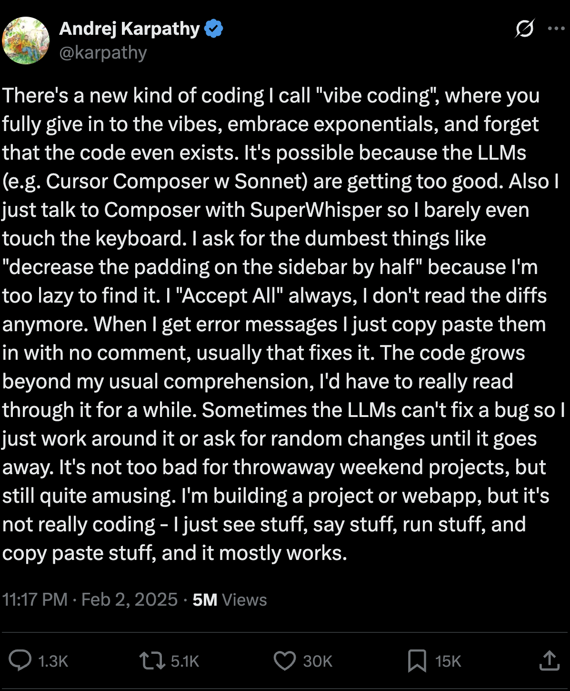
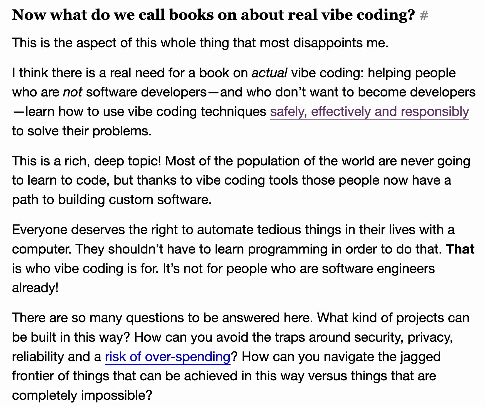
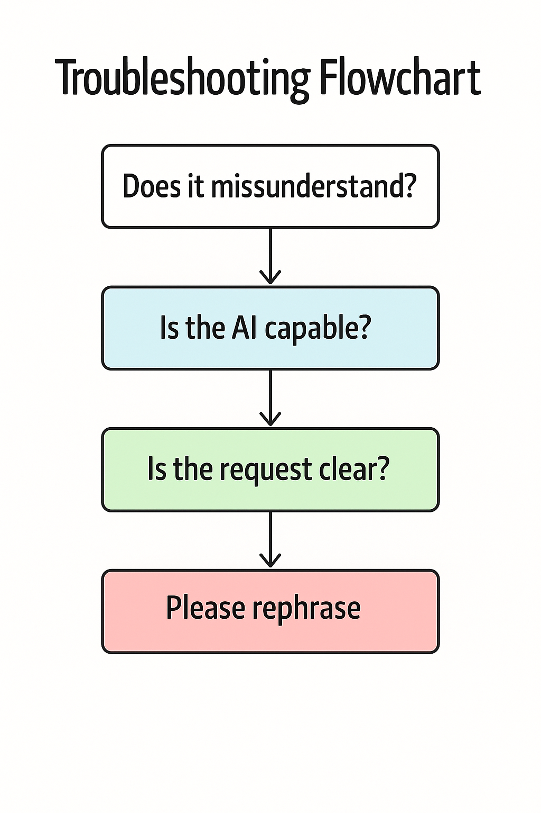

class: center, middle # Vibe Coding for Problem Solvers ## Translating intent to LLMs **By Lucas Soares** 08/05/2025 --- # About Me <img src="../assets/profile_pic.png" width="300px"> - **AI Engineer & Instructor** - Passionate about AI-augmented development -- - Building tools and teaching workflows -- - Focus on practical AI integration -- --- # What You'll Learn: 1. Understand Vibe Coding as a skill 2. Position it within AI development spectrum 3. Understand trade-offs and use cases 4. Master core intent-translation skills with practical examples 5. Learn effective patterns and tools --- class: center, middle # What is Vibe Coding? --- <div style="display: flex; justify-content: center;">  </div> --- class: center, middle <div style="border: 2px solid #ccc; padding: 20px; border-radius: 10px; background-color: #f9f9f9;"> <h3>Definition</h3> <p><strong>Vibe Coding</strong>: A "vibe-based" approach to software development for low stakes scenarios that prioritizes rapid prototyping through natural language dialogue with AI, emphasizing intuition ("vibes") and iteration over formal planning.</p> </div> --- # Key Characteristics: - **Low-stakes prototyping** with LLMs - **Natural language** as primary interface - Ideal for **Experimentation** - **Rapid iteration** cycles --- class: center, middle <h1> <span style="background-color: lightgreen"> Whiteboard - The Spectrum of AI-Augmented Development & Useful Definitions </span> </h1> --- # Trade-offs and Characteristics <div style="display: flex; justify-content: center; align-items: flex-start; gap: 40px; min-height: 340px;"> <!-- Vibe Coding --> <div style="flex: 0 0 250px; text-align: center;"> <h3 style="margin-bottom: 16px;">Vibe Coding</h3> <ul style="color: #e74c3c; text-align: left; display: inline-block; margin: 0 auto;"> <li>↓ Less systematicity</li> <li>↓ Less precision</li> <li>↓ Less review</li> <li>↓ Less understanding</li> <li>↓ Less control</li> <li>↑ <strong>Maximum speed</strong></li> </ul> </div> <!-- AI-Assisted Programming --> <div style="flex: 0 0 300px; text-align: center;"> <h3 style="margin-bottom: 16px;">AI-Assisted Programming</h3> <ul style="color: #f39c12; text-align: left; display: inline-block; margin: 0 auto;"> <li>○ Balanced systematicity</li> <li>○ Balanced precision</li> <li>○ Strategic review</li> <li>○ Guided understanding</li> <li>○ Shared control</li> <li>○ <strong>True augmentation</strong></li> </ul> </div> <!-- Software Engineering --> <div style="flex: 0 0 250px; text-align: center;"> <h3 style="margin-bottom: 16px;">Software Engineering</h3> <ul style="color: #27ae60; text-align: left; display: inline-block; margin: 0 auto;"> <li>↑ More systematicity</li> <li>↑ More precision</li> <li>↑ More review</li> <li>↑ More understanding</li> <li>↑ More control</li> <li>↓ <strong>Slower process</strong></li> </ul> </div> </div> --- class: center, middle <h1> <span style="background-color: lightgreen"> Whiteboard - Tooling Landscape </span> </h1> --- # The Vibe Coding Ecosystem ### Tool Categories & Examples: - **Terminal Agents**: Claude Code, Aider, Gemini CLI, Warp - **IDE Integration**: Cursor, GitHub Copilot, Windsurf - **Web Visual Builders**: Claude Artifacts, Vercel v0, Lovable - **Cloud Environments**: Replit, Replicate, Together.ai --- class: center, middle <div style="text-align: center;">  </div> --- class: center, middle # Vibe Coding in Practice <h2> <span style="background-color: lightgreen"> Demo - Intent Translation Workshop </span> </h2> --- # Thinking as Translation of Intent ## Core Concept: Intent → Output <div style="text-align: center; margin: 30px 0;"> <div style="display: inline-block; padding: 20px; border: 2px solid #3498db; border-radius: 10px;"> <h3>Fuzzy Intent</h3> <p>"I want something cool"</p> </div> <span style="font-size: 48px; margin: 0 30px;">→</span> <div style="display: inline-block; padding: 20px; border: 2px solid #2ecc71; border-radius: 10px;"> <h3>Clear Translation</h3> <p>"Interactive dashboard with..."</p> </div> <span style="font-size: 48px; margin: 0 30px;">→</span> <div style="display: inline-block; padding: 20px; border: 2px solid #e74c3c; border-radius: 10px;"> <h3>Functional Output</h3> <p>Working application</p> </div> </div> --- # Intent Translation as Core Skill ## Converting Fuzzy Ideas into Clear Instructions ### The Challenge: Bridge the gap between "what I want" and "what AI understands" -- ### Example Transformation: ``` Fuzzy: "Make it look better" ↓ Clear: "Apply a modern design system with consistent spacing (16px grid), professional color palette (blues and grays), and smooth transitions" ``` -- ### Key Principle: The clearer your intent, the better the output --- # The Craft-Respond-Refine Framework <div style="text-align: center;"> <h2>The Core Iteration Cycle</h2> <div style="margin: 40px 0;"> <span style="font-size: 60px;">✍️</span> <span style="font-size: 36px; margin: 0 20px;">→</span> <span style="font-size: 60px;">🤖</span> <span style="font-size: 36px; margin: 0 20px;">→</span> <span style="font-size: 60px;">🔄</span> </div> <div> <span style="margin: 0 60px;"><strong>Craft</strong></span> <span style="margin: 0 60px;"><strong>Respond</strong></span> <span style="margin: 0 60px;"><strong>Refine</strong></span> </div> </div> -- ### In Practice: 1. **Craft**: Write clear, specific intent 2. **Respond**: Execute AI suggestion immediately 3. **Refine**: Adjust based on results --- # Control x Speed in AI/Non-AI Dev (insights): - **High Control** -- - Deep understanding -- - Careful review -- - Systematic approach -- - **High Speed** -- - Rapid iteration -- - Intuitive flow -- - Experimental mindset --- # The Sweet Spot: Choose your position based on: - Project requirements - Risk tolerance - Learning goals --- # Anatomy of Clear Intent ## Components of Effective Requests <div style="border: 2px solid #3498db; padding: 20px; border-radius: 10px;"> <h3>Template Structure:</h3> <pre> 1. <strong>Context</strong>: What exists now 2. <strong>Goal</strong>: What you want to achieve 3. <strong>Constraints</strong>: Limitations or requirements 4. <strong>Success Criteria</strong>: How to measure completion 5. <strong>Examples</strong>: Reference points (optional) </pre> </div> --- ## Example: ``` Context: Basic todo app with add/delete Goal: Add drag-and-drop reordering Constraints: Mobile-friendly, smooth animations Success: Items reorder instantly, state persists Example: Like Todoist's drag behavior ``` --- # From Vague to Specific ## Progressive Clarification Examples <div style="display: flex; justify-content: space-between;"> <div style="flex: 1; margin-right: 20px;"> <h3>❌ Vague</h3> <ul> <li>"Make a form"</li> <li>"Add animations"</li> <li>"Improve performance"</li> <li>"Fix the bug"</li> </ul> </div> <div style="flex: 1;"> <h3>✅ Specific</h3> <ul> <li>"Create a contact form with name, email, message fields and validation"</li> <li>"Add fade-in animation on scroll using Intersection Observer"</li> <li>"Optimize image loading with lazy loading and WebP format"</li> <li>"Fix form submission that fails when email contains '+' symbol"</li> </ul> </div> </div> --- # Functional Requirements Translation ## The Input → Processing → Output Framework ### Example: Search Feature ``` INPUT: User types search query PROCESSING: - Debounce input (300ms) - Filter items by title/content - Sort by relevance OUTPUT: Display filtered results with highlights ``` -- Use this framework for any feature request --- # Six Foundational Prompting Principles <div style="display: grid; grid-template-columns: 1fr 1fr; gap: 20px;"> <div> <h3>1️⃣ Be Specific</h3> <p>Include concrete details and examples</p> </div> <div> <h3>2️⃣ Provide Context</h3> <p>Explain the bigger picture and constraints</p> </div> <div> <h3>3️⃣ Define Success</h3> <p>Describe the desired outcome clearly</p> </div> <div> <h3>4️⃣ Iterate Incrementally</h3> <p>Build complexity step by step</p> </div> <div> <h3>5️⃣ Test Immediately</h3> <p>Verify each change before proceeding</p> </div> <div> <h3>6️⃣ Learn from Output</h3> <p>Adjust approach based on results</p> </div> </div> --- # Building Your Translation Vocabulary ## Developing Precision in Technical Communication <div style="display: flex; flex-wrap: wrap; gap: 10px;"> <div style="background-color: #e8f4fd; padding: 10px; border-radius: 5px;"> <strong>UI/UX Terms</strong>: modal, toast, drawer, accordion, carousel </div> <div style="background-color: #fff3cd; padding: 10px; border-radius: 5px;"> <strong>Behavior Terms</strong>: debounce, throttle, lazy-load, infinite-scroll </div> <div style="background-color: #d4edda; padding: 10px; border-radius: 5px;"> <strong>State Terms</strong>: persist, cache, synchronize, reconcile </div> <div style="background-color: #f8d7da; padding: 10px; border-radius: 5px;"> <strong>Pattern Terms</strong>: singleton, observer, factory, middleware </div> </div> -- ### Build your vocabulary through: - Reading documentation - Studying existing code - Learning from AI outputs --- # Intent Layering Strategy ## Building Complexity Incrementally <div style="text-align: center;"> <div style="display: inline-block; text-align: left;"> <h3>🏗️ The Pyramid Approach</h3> <div style="margin-left: 0px;">Level 4: Optimization & Polish</div> <div style="margin-left: 20px;">Level 3: Enhanced Features</div> <div style="margin-left: 40px;">Level 2: Core Functionality</div> <div style="margin-left: 60px;">Level 1: Basic Structure</div> </div> </div> -- ### Example: Building a Chart Component ``` L1: Display static bar chart L2: Add data binding and updates L3: Add interactions and tooltips L4: Optimize performance and animations ``` --- # Testing Your Translation Skills ## Building Feedback Loops <div style="display: flex; justify-content: space-around;"> <div> <h3>🔄 Immediate Testing</h3> <ul> <li>Run code after each change</li> <li>Verify expected behavior</li> <li>Check edge cases</li> <li>Note unexpected results</li> </ul> </div> <div> <h3>📊 Gap Analysis</h3> <ul> <li>Compare intent vs output</li> <li>Identify missing details</li> <li>Refine communication</li> <li>Build pattern library</li> </ul> </div> </div> -- ### Testing Cycle: Intent → Generate → Test → Analyze → Refine → Repeat --- # Context Communication Patterns ## Maintaining Continuity Across Iterations ### Effective Context Strategies: ```markdown 1. Reference Previous Work: "Building on the auth system we created..." 2. Maintain State Awareness: "Given that users are already logged in..." 3. Preserve Constraints: "Keep the mobile-first approach we established..." 4. Link Related Changes: "This connects to the API endpoint we modified..." ``` -- ### Pro Tip: Summarize context periodically to prevent drift --- # Effective Iteration Techniques ## The Power of Focused Changes <div style="border: 2px solid #e74c3c; padding: 20px; border-radius: 10px; background-color: #fee;"> <h3>⚠️ Golden Rule</h3> <p><strong>One change per iteration</strong> - Multiple changes make debugging impossible</p> </div> -- ### Iteration Best Practices: 1. **Test immediately** after each change 2. **Save working versions** before major modifications 3. **Focus improvements** on specific aspects 4. **Document decisions** for future reference --- # Debugging Intent Mismatches <div style="text-align: center;">  </div> ### Common Fixes: - Add concrete examples - Break into smaller steps - Specify exact behavior - Provide visual references - Clarify ambiguous terms --- # Verification and Trust Building ## Balancing Speed with Accuracy ### Verification Strategies: - **Spot checks** for familiar patterns - **Deep review** for critical logic - **User testing** for UX decisions - **Performance profiling** for optimization - **Security audit** for sensitive features --- # Common Translation Failures <div style="display: grid; grid-template-columns: 1fr 1fr; gap: 20px;"> <div style="background-color: #fee; padding: 15px; border-radius: 5px;"> <h3>🚫 Assumption Overload</h3> <p>Expecting AI to infer unstated requirements</p> </div> <div style="background-color: #fee; padding: 15px; border-radius: 5px;"> <h3>🚫 Context Loss</h3> <p>Forgetting to maintain continuity</p> </div> <div style="background-color: #fee; padding: 15px; border-radius: 5px;"> <h3>🚫 Ambiguous Success</h3> <p>Not defining clear completion criteria</p> </div> <div style="background-color: #fee; padding: 15px; border-radius: 5px;"> <h3>🚫 Kitchen Sink Requests</h3> <p>Asking for everything at once</p> </div> </div> --- # Vibe Coding Patterns & Strategies <div style="display: grid; grid-template-columns: 1fr 1fr;"> <div> <h3>🎯 Intent Patterns</h3> <ul> <li>Progressive refinement</li> <li>Example-driven requests</li> <li>Constraint specification</li> <li>Reference-based design</li> </ul> </div> <div> <h3>🔄 Workflow Strategies</h3> <ul> <li>Start simple, iterate fast</li> <li>Test immediately</li> <li>Save working versions</li> <li>Refactor when natural</li> </ul> </div> <div> <h3>🛠️ Tools & Context</h3> <ul> <li>Match tool/data to task</li> <li>Know tool strengths</li> <li>Combine effectively with right context</li> <li>Switch when stuck</li> </ul> </div> <div> <h3>💡 Success Tactics</h3> <ul> <li>Maintain context focus</li> <li>Build incrementally</li> <li>Trust but verify</li> <li>Learn from outputs</li> </ul> </div> </div> --- # Building Translation Confidence ## Progressive Skill Development Plan **Week 1**: Basic UI Components - Buttons, forms, lists - Focus on visual clarity **Week 2**: Interactive Features - Events, state, animations - Practice behavior description **Week 3**: Data Integration - APIs, databases, storage - Master data flow articulation **Week 4**: Complex Systems - Multi-component features - Full application flows --- # Advanced Intent Patterns ## Handling Complex Requirements ### Pattern Library: ```javascript // Algorithm Specification "Implement binary search that returns index or -1, handles edge cases, with O(log n) complexity" // Performance Requirements "Optimize render to maintain 60fps scrolling with 1000+ items using virtual scrolling" // Business Logic "Calculate discount: 10% for 3+ items, 15% for members, max 20% total, excluding sale items" ``` -- Master these patterns for production-ready code --- class: center, middle # Hands-On Exercise Setup <h2> <span style="background-color: lightgreen"> Demo - Practice Intent Translation </span> </h2> ### Your Challenge: Build a "Pomodoro Timer" using only natural language --- # Exercise - Intent Practice ## Step 1: Describe Your Vision ### Starter Template: ``` "Create a Pomodoro timer that [describe appearance] with [list key features]. It should [describe behavior] and feel [adjectives for user experience]." ``` -- ### Example Start: ``` "Create a Pomodoro timer that looks minimal and modern with start/pause button, time display, and session counter. It should notify when complete and feel calm and focused." ``` --- # Exercise - Refinement Skills ## Step 2: Iterative Improvements ### Practice These Refinements: 1. **Visual Polish** - "Make the timer display larger with monospace font" 2. **Behavior Enhancement** - "Add keyboard shortcuts: space to start/pause" 3. **User Experience** - "Include subtle tick sound and progress ring" 4. **State Management** - "Persist timer state if user refreshes page" --- # Developing Your Translation Style ## Personal Patterns and Intuition ### Build Your Phrase Library: <div style="display: grid; grid-template-columns: 1fr 1fr; gap: 20px;"> <div> <h4>🎨 For Design</h4> <ul> <li>"Modern with subtle shadows"</li> <li>"Breathing room around elements"</li> <li>"Smooth, not jarring"</li> </ul> </div> <div> <h4>⚡ For Behavior</h4> <ul> <li>"Responds immediately"</li> <li>"Graceful error handling"</li> <li>"Progressive disclosure"</li> </ul> </div> </div> -- ### Your style emerges through practice --- class: center, middle # Best Practices & Vibe Checks *Mastering the Art of AI Collaboration* --- # Introduction to Best Practices ## From Theory to Practical Application ### Proven strategies for effective AI-assisted development <div style="text-align: center;"> <h3>Best Practices Framework</h3> <img src="./best-practices-framework.png" width="700px" alt="Best Practices Framework"> </div> ### Four Core Categories: <div style="display: grid; grid-template-columns: 1fr 1fr; gap: 20px; margin-top: 20px;"> <div style="text-align: center; padding: 15px; background-color: #e8f4fd; border-radius: 10px;"> <h4>🗣️ Communication</h4> <p>Clear intent, context management</p> </div> <div style="text-align: center; padding: 15px; background-color: #fff3cd; border-radius: 10px;"> <h4>✅ Verification</h4> <p>Trust calibration, vibe checks</p> </div> <div style="text-align: center; padding: 15px; background-color: #d4edda; border-radius: 10px;"> <h4>🔄 Workflow</h4> <p>Integration patterns, rhythms</p> </div> <div style="text-align: center; padding: 15px; background-color: #f8d7da; border-radius: 10px;"> <h4>🎯 Decision-making</h4> <p>When to use, trust levels</p> </div> </div> --- # Prompt Refinement Strategies ## The "Zoom and Enhance" Method ### Iterative improvement technique: Start broad → Add constraints → Clarify edge cases <div style="text-align: center;"> <h3>Prompt Evolution Funnel</h3> <img src="./prompt-funnel.png" width="600px" alt="Prompt Evolution"> </div> -- ### Example Progression: ``` Level 1 (Broad): "Create a login form" ↓ Level 2 (Constraints): "Create a React login form with email/password, validation" ↓ Level 3 (Specifics): "Create a React login form with email/password fields, real-time validation, accessibility support, and error handling for network failures" ↓ Level 4 (Edge Cases): "...also handle password visibility toggle, remember me checkbox, and forgot password link" ``` --- # Context Management Mastery ## Maintaining Coherent Conversation Threads ### Key Decision Points: When to continue vs clarify vs reset <div style="text-align: center;"> <h3>Context Timeline Strategy</h3> <img src="./context-timeline.png" width="700px" alt="Context Timeline"> </div> -- ### Context Management Rules: <div style="display: flex; justify-content: space-around;"> <div> <h4>🟢 Continue When:</h4> <ul> <li>Building on previous work</li> <li>Context still relevant</li> <li>Under token limits</li> <li>AI demonstrates understanding</li> </ul> </div> <div> <h4>🟡 Clarify When:</h4> <ul> <li>Output seems confused</li> <li>Requirements changed</li> <li>Need to redirect focus</li> <li>Missing important context</li> </ul> </div> <div> <h4>🔴 Reset When:</h4> <ul> <li>Context window full</li> <li>Major direction change</li> <li>Persistent misunderstanding</li> <li>Starting new feature</li> </ul> </div> </div> --- # Leveraging AI as Problem-Solving Partner ## Beyond Code Generation ### Using AI for architecture decisions, debugging strategies, and creative solutions <div style="text-align: center;"> <h3>AI Partnership Model</h3> <img src="./partnership-model.png" width="600px" alt="Partnership Model"> </div> -- ### Collaboration Modes: <div style="display: grid; grid-template-columns: 1fr 1fr; gap: 20px;"> <div> <h4>🏗️ Architect Mode</h4> <p>"What's the best approach for handling real-time data in this React app?"</p> </div> <div> <h4>🔍 Detective Mode</h4> <p>"This API call is failing intermittently. What could cause this pattern?"</p> </div> <div> <h4>💡 Innovator Mode</h4> <p>"How might we make this user experience more delightful?"</p> </div> <div> <h4>🎓 Mentor Mode</h4> <p>"Explain the trade-offs between these two database designs"</p> </div> </div> --- # Introduction to Vibe Checks ## Definition: Lightweight verification scripts that confirm "the vibe is right" ### Quick sanity checks without full testing <div style="border: 2px solid #3498db; padding: 20px; border-radius: 10px; background-color: #f0f8ff;"> <h3>What is a Vibe Check?</h3> <p>A <strong>vibe check</strong> is a rapid, informal verification that your code is working as expected. It's the programming equivalent of "does this feel right?" - catching obvious issues without comprehensive testing.</p> </div> -- ### Vibe Check Examples: ```javascript // Quick functionality check console.log('API response:', await fetchUsers()); // Data shape verification console.log('User count:', users.length, 'First user:', users[0]); // UI responsiveness check document.querySelector('.button').click(); // Does it respond? // Basic assertion if (!user.id) console.warn('Missing user ID!'); ``` --- # The Vibe Check Toolkit ## Types of vibe checks and when to use each <div style="text-align: center;"> <h3>Vibe Check Matrix</h3> <img src="./vibe-check-matrix.png" width="700px" alt="Vibe Check Matrix"> </div> ### The Four Types: <div style="display: grid; grid-template-columns: 1fr 1fr; gap: 20px;"> <div style="background-color: #e8f4fd; padding: 15px; border-radius: 10px;"> <h4>🎯 Functionality Smoke Tests</h4> <ul> <li>Does the button click?</li> <li>Does the form submit?</li> <li>Does the API call return data?</li> </ul> </div> <div style="background-color: #fff3cd; padding: 15px; border-radius: 10px;"> <h4>📊 Data Shape Verification</h4> <ul> <li>Are arrays the right length?</li> <li>Do objects have expected keys?</li> <li>Are data types correct?</li> </ul> </div> <div style="background-color: #d4edda; padding: 15px; border-radius: 10px;"> <h4>📱 UI Responsiveness</h4> <ul> <li>Do animations feel smooth?</li> <li>Are loading states visible?</li> <li>Does mobile layout work?</li> </ul> </div> <div style="background-color: #f8d7da; padding: 15px; border-radius: 10px;"> <h4>🔗 API Connectivity</h4> <ul> <li>Are endpoints reachable?</li> <li>Do auth tokens work?</li> <li>Are response times reasonable?</li> </ul> </div> </div> --- # Trust vs Verification Spectrum ## Finding your comfort zone between speed and safety <div style="text-align: center;"> <h3>The Trust Spectrum</h3> <img src="./trust-spectrum-detailed.png" width="700px" alt="Trust vs Verification Spectrum"> </div> ### Factors Affecting Trust Levels: -- <div style="display: flex; justify-content: space-around;"> <div> <h4>🟢 High Trust Scenarios</h4> <ul> <li>Familiar patterns</li> <li>Low criticality</li> <li>Easy to reverse</li> <li>AI has context</li> </ul> </div> <div> <h4>🟡 Medium Trust Scenarios</h4> <ul> <li>Business logic</li> <li>Moderate complexity</li> <li>Some domain knowledge</li> <li>Reversible changes</li> </ul> </div> <div> <h4>🔴 Low Trust Scenarios</h4> <ul> <li>Security operations</li> <li>Financial calculations</li> <li>Performance critical</li> <li>Regulatory compliance</li> </ul> </div> </div> --- # When to Deep Dive vs Trust the Vibe ## Decision Framework <div style="text-align: center;"> <h3>The Complexity vs Criticality Matrix</h3> <img src="./decision-matrix.png" width="600px" alt="Decision Matrix"> </div> ### Framework Guide: <div style="display: grid; grid-template-columns: 1fr 1fr; gap: 20px; margin-top: 20px;"> <div style="background-color: #d4edda; padding: 15px; border-radius: 10px;"> <h4>✅ Trust the Vibe</h4> <p><strong>Low Complexity + Low Criticality</strong></p> <p>UI styling, simple forms, basic components</p> </div> <div style="background-color: #fff3cd; padding: 15px; border-radius: 10px;"> <h4>👀 Quick Review</h4> <p><strong>High Complexity + Low Criticality</strong></p> <p>Complex animations, advanced UI patterns</p> </div> <div style="background-color: #fff3cd; padding: 15px; border-radius: 10px;"> <h4>🔍 Vibe Check</h4> <p><strong>Low Complexity + High Criticality</strong></p> <p>Authentication flows, data validation</p> </div> <div style="background-color: #f8d7da; padding: 15px; border-radius: 10px;"> <h4>🔬 Deep Dive</h4> <p><strong>High Complexity + High Criticality</strong></p> <p>Payment processing, security systems</p> </div> </div> --- # Red Flags That Demand Review ## Warning signs that require manual inspection <div style="border: 2px solid #e74c3c; padding: 20px; border-radius: 10px; background-color: #fee;"> <h3>🚨 Immediate Review Required</h3> </div> ### Critical Review Triggers: <div style="display: grid; grid-template-columns: 1fr 1fr; gap: 20px; margin-top: 20px;"> <div> <h4>🔐 Security Operations</h4> <ul> <li style="color: #e74c3c;">Authentication logic</li> <li style="color: #e74c3c;">Permission checks</li> <li style="color: #e74c3c;">Data encryption</li> <li style="color: #e74c3c;">API key handling</li> </ul> </div> <div> <h4>💰 Financial Logic</h4> <ul> <li style="color: #e74c3c;">Payment processing</li> <li style="color: #e74c3c;">Price calculations</li> <li style="color: #e74c3c;">Currency conversions</li> <li style="color: #e74c3c;">Tax computations</li> </ul> </div> <div> <h4>🗃️ Data Operations</h4> <ul> <li style="color: #e74c3c;">Database mutations</li> <li style="color: #e74c3c;">Data migrations</li> <li style="color: #e74c3c;">Backup procedures</li> <li style="color: #e74c3c;">Data deletion</li> </ul> </div> <div> <h4>⚡ Performance Critical</h4> <ul> <li style="color: #e74c3c;">Database queries</li> <li style="color: #e74c3c;">API rate limiting</li> <li style="color: #e74c3c;">Memory management</li> <li style="color: #e74c3c;">Real-time features</li> </ul> </div> </div> --- # Building Your Vibe Check Rhythm ## Integrating lightweight verification into your flow <div style="text-align: center;"> <h3>Vibe Check Integration Points</h3> <img src="./vibe-check-workflow.png" width="700px" alt="Vibe Check Workflow"> </div> ### Creating Personal Heuristics: -- <div style="display: flex; justify-content: space-around;"> <div> <h4>🎯 Immediate Checks</h4> <ul> <li>Does it compile/run?</li> <li>Basic functionality works?</li> <li>No obvious errors?</li> </ul> </div> <div> <h4>⏱️ 5-Minute Checks</h4> <ul> <li>Edge cases handled?</li> <li>Error states work?</li> <li>Performance feels right?</li> </ul> </div> <div> <h4>📅 End-of-Session</h4> <ul> <li>Integration works?</li> <li>User flow complete?</li> <li>Ready for demo?</li> </ul> </div> </div> -- ### Learning from Near-Misses: Track when your gut feeling was right or wrong to calibrate your intuition --- # Vibe Check Examples & Patterns ## Real-world examples of effective vibe checks ### Quick Patterns for Different Project Types: ```javascript // React Component Vibe Check const QuickCheck = () => { console.log('Component rendered'); useEffect(() => console.log('Effect ran'), []); return <div onClick={() => console.log('Click works')}>Test</div>; }; // API Integration Vibe Check const testAPI = async () => { try { const data = await fetch('/api/users').then(r => r.json()); console.log(`Got ${data.length} users:`, data[0]); } catch (e) { console.error('API fail:', e.message); } }; // Database Vibe Check db.users.findOne().then(user => { console.log('DB connected, sample user:', user?.email); }); // CSS Vibe Check document.body.style.border = '2px solid red'; // Visual confirmation setTimeout(() => document.body.style.border = '', 1000); ``` -- ### Pattern Libraries: Build your collection of go-to vibe checks for common scenarios --- # Evolving Your Practice ## How your verification needs change as you gain experience <div style="text-align: center;"> <h3>Experience vs Vibe Check Frequency</h3> <img src="./experience-progression.png" width="600px" alt="Experience Progression"> </div> ### Calibrating Your Intuition: -- <div style="display: flex; justify-content: space-around;"> <div> <h4>🌱 Beginner (Month 1-2)</h4> <ul> <li>Vibe check everything</li> <li>Build pattern recognition</li> <li>Learn tool capabilities</li> <li>Document surprises</li> </ul> </div> <div> <h4>🌿 Intermediate (Month 3-6)</h4> <ul> <li>Selective verification</li> <li>Trust familiar patterns</li> <li>Focus on complexity</li> <li>Develop intuition</li> </ul> </div> <div> <h4>🌳 Advanced (6+ Months)</h4> <ul> <li>Intuitive trust levels</li> <li>Efficient spot checks</li> <li>Custom verification</li> <li>Mentor others</li> </ul> </div> </div> --- class: center, middle # Section 3: Integration & Next Steps *From Practice to Professional Workflow* --- # From Practice to Mastery ## The Journey of Deliberate Practice <div style="text-align: center;"> <h3>Mastery Progression Timeline</h3> <img src="./mastery-timeline.png" width="700px" alt="Mastery Timeline"> </div> ### Milestones: - **Week 1-2**: Basic fluency with simple requests - **Month 1**: Complex features without struggle - **Month 3**: Intuitive understanding of AI capabilities - **Month 6**: Seamless integration into workflow --- # Integration with Development Workflow ## Making Vibe Coding Part of Your Process <div style="text-align: center;"> <img src="./workflow-integration.png" width="700px" alt="Workflow Integration"> </div> ### Integration Points: 1. **Ideation**: Rapid prototyping of concepts 2. **Development**: Boilerplate and routine tasks 3. **Debugging**: Second pair of eyes 4. **Documentation**: Auto-generate from code 5. **Testing**: Test case generation --- # When to Use Vibe Coding ## Decision Framework <div style="text-align: center;"> <h3>Should I Vibe Code This?</h3> <img src="./decision-tree.png" width="600px" alt="Decision Tree"> </div> ### ✅ Perfect For: - Prototypes and MVPs - Learning new technologies - Exploring design options - Personal projects ### ⚠️ Use Caution: - Production critical systems - Security-sensitive code - Performance-critical paths - Large team projects --- # Scaling Beyond Prototypes ## Transitioning to Production <div style="text-align: center;"> <h3>The Scaling Pathway</h3> <div style="display: flex; justify-content: center; align-items: center; margin: 20px 0;"> <div style="padding: 20px; border: 2px solid #e74c3c; border-radius: 10px;">Vibe Prototype</div> <span style="font-size: 36px; margin: 0 20px;">→</span> <div style="padding: 20px; border: 2px solid #f39c12; border-radius: 10px;">Refined Version</div> <span style="font-size: 36px; margin: 0 20px;">→</span> <div style="padding: 20px; border: 2px solid #27ae60; border-radius: 10px;">Production Code</div> </div> </div> ### Key Transitions: 1. Add comprehensive testing 2. Implement error handling 3. Optimize performance 4. Document thoroughly 5. Review security --- # Building Team Capabilities ## Spreading Vibe Coding Skills ### Team Development Framework: <div style="display: grid; grid-template-columns: 1fr 1fr; gap: 20px;"> <div> <h3>🎓 Training Approach</h3> <ol> <li>Start with low-stakes projects</li> <li>Pair programming sessions</li> <li>Share prompt libraries</li> <li>Weekly show-and-tell</li> <li>Build team patterns</li> </ol> </div> <div> <h3>📊 Success Metrics</h3> <ul> <li>Prototype velocity</li> <li>Code reuse rate</li> <li>Feature delivery time</li> <li>Developer satisfaction</li> <li>Innovation frequency</li> </ul> </div> </div> --- # Continuous Learning & Adaptation ## Staying Current with AI Evolution <div style="text-align: center;"> <h3>The Learning Loop</h3> <img src="./learning-loop.png" width="600px" alt="Learning Loop"> </div> ### Stay Updated: - Follow AI tool releases - Experiment with new features - Share discoveries with community - Adapt workflows continuously - Build on others' innovations --- # Key Takeaways & Action Steps ## Your Vibe Coding Journey Starts Now ### 🎯 Core Principles: 1. **Clear intent** beats perfect syntax 2. **Flow state** drives productivity 3. **Iteration** reveals solutions 4. **Trust with verification** ensures quality 5. **Personal style** emerges through practice -- ### 📋 Immediate Action Steps: - [ ] Set up your preferred AI coding tool - [ ] Practice intent translation daily (15 min) - [ ] Build one small project this week - [ ] Share your experience with others - [ ] Join the vibe coding community -- > "The future of coding is not about writing every line, but about clearly expressing what you want to build" --- class: center, middle # Thank You! ## Keep Vibing, Keep Building **Contact**: @lucasoares **Email**: lucasenkrateia@gmail.com **Resources**: [Course materials and community] --- class: center, middle # Final Q&A *Let's discuss your questions, challenges, and victories* --- # Connect With Me: - 📚 [Blog](https://enkrateialucca.github.io/lucas-landing-page/) - 🔗 [LinkedIn](https://www.linkedin.com/in/lucas-soares-969044167/) - 🐦 [Twitter/X](https://x.com/LucasEnkrateia) - 📺 [YouTube](https://www.youtube.com/@automatalearninglab) - 📧 Email: lucasenkrateia@gmail.com